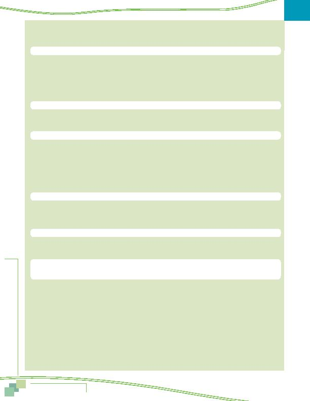

MWCOG-Comm
uter Conn
ecti
on
s-- 2010 State o
f th
e Comm
ute Report
7 4
TELECOMMUTE (continued)
2010 2007 2004 2001
n
Telecommute frequency
current telecommuters
Occasionally/special
projects
10% 10% 10% 17%
< once per month/emergency
12%
8%
12%
12%
1 3 times per month
30%
26%
32%
28%
1 day per week
19%
18%
15%
16%
2 days per week
12%
16%
12%
9%
3 or more times per week
17%
22%
19%
16%
Mean (days per week)
1.3
1.5
1.3
1.1
n
Length of time telecommuting
current telecommuters
Less than one year
16%
14%
22%
23%
One to two years
22%
29%
27%
29%
More than two years
62%
58%
51%
48%
n
How learned about telecommute
current telecommuters
Program at work/employer
71%
55%
56%
34%
Word of mouth
5%
13%
18%
18%
Initiated request on my own
15%
23%
16%
26%
Commuter
Connections/COG
6% 7% 5% 6%
Advertising
0% 2% 3% 6%
AWARENESS/ATTITUDES TOWARD TRANSPORTATION OPTIONS
n
HOV lane availability and use
all regional commuters
Commuters with lane on route to work
30%
29%
29%
27%
Use
lanes
27% 27% 8% 7%
Avg. time savings one way trip (min) 23 min.
21 min.
25 min.
22 min.
n
Park & Ride availability and use
all regional commuters
Know locations of P&R lots
45%
38%
40%
42%
Used P&R in past year
9%
7%
7%
7%
n
Reasons for not riding bus/train
regional commuters who don't currently use bus/train (note that in 2010,
one question was asked about reasons for not using transit), while in 2001, 2004, and 2007, questions were asked about bus
and train individually.) Results for individual bus and train questions are shown on the next page for 2001, 2004, and 2007
Trips takes too much time
32%
N/A
N/A
N/A
Need car for work
11%
N/A
N/A
N/A
No bus service, don't know service
31%
N/A
N/A
N/A
Work schedule irregular
10%
N/A
N/A
N/A
Trip too long distance too far
8%
N/A
N/A
N/A
Bus
unreliable/late
3% N/A N/A N/A
Need car before or after work
9%
N/A
N/A
N/A
Don't like riding with strangers,
4%
N/A
N/A
N/A
Prefer to be alone
Too
expensive
5% N/A N/A N/A
Comparison of Key SOC Results